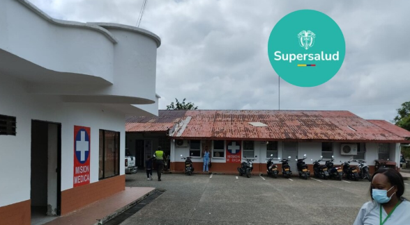
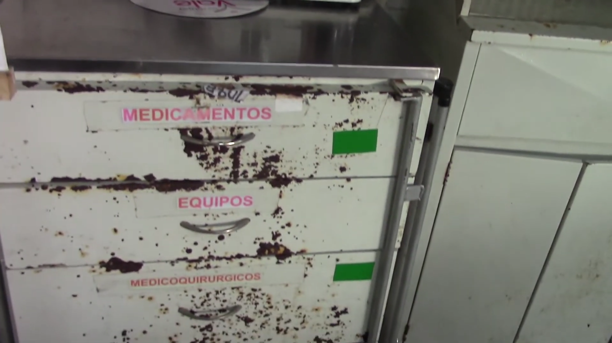
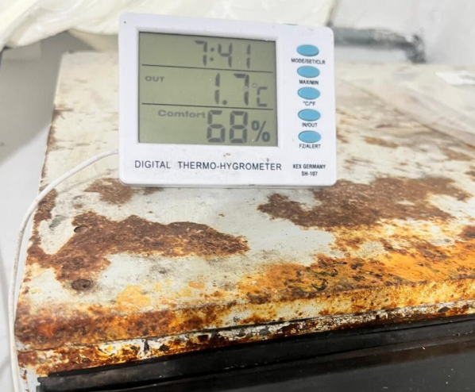
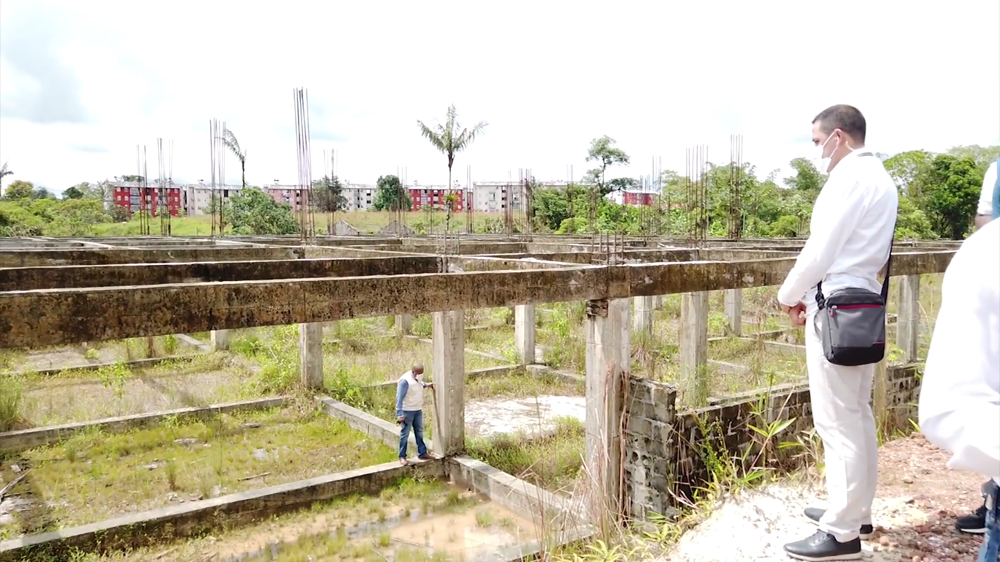
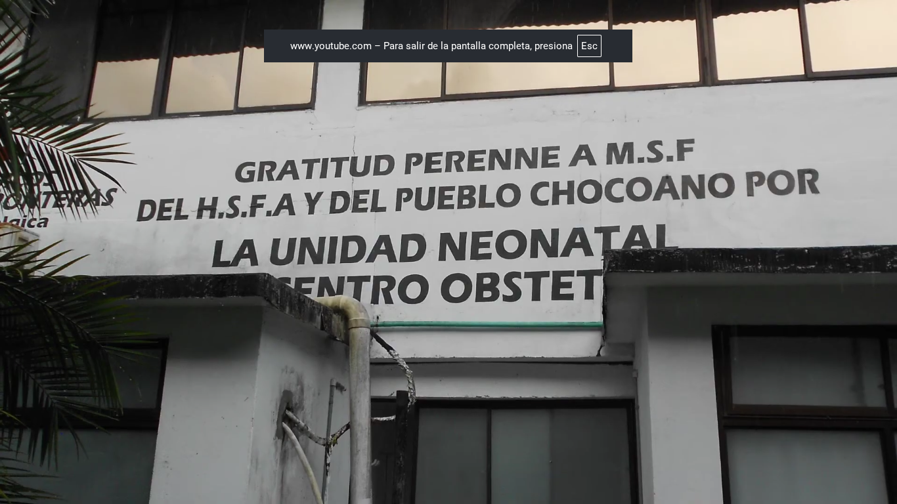
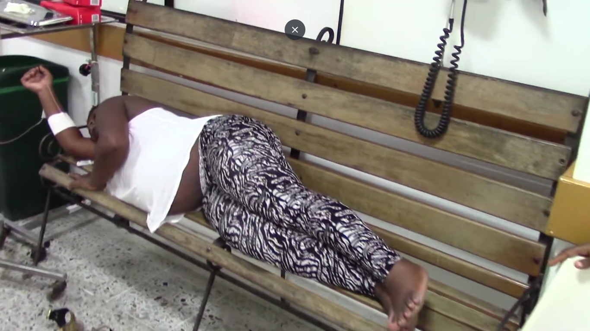
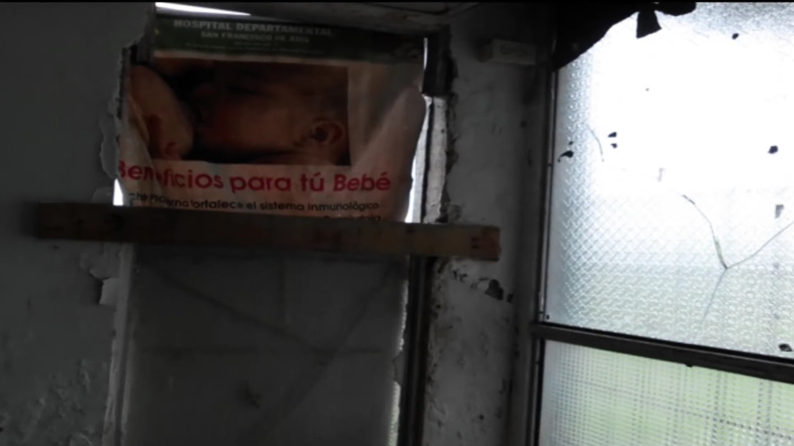

El peso del detrimento:
quién, cuánto y dónde
El daño al erario público no se distribuye de manera uniforme en el Chocó. Los datos verificados en comunicados oficiales de la Contraloría General de la República revelan una concentración sectorial que señala con precisión dónde se acumulan los mayores riesgos para el patrimonio público departamental entre 2020 y 2023.
El mayor hallazgo del período corresponde al ICBF Regional Chocó: $7.016 millones detectados en la auditoría de cumplimiento a las vigencias 2020, 2021 y primer semestre de 2022 —Comunicado de Prensa CGR No. 192, 19 de diciembre de 2022—. Lejos de ser una abstracción contable, este hallazgo revela algo más perturbador: la Dirección de Información, Análisis y Reacción Inmediata (DIARI) de la CGR cruzó las bases de datos Reporte Cuéntame 2021 y Reporte Cuéntame 2022 con el registro civil de la Registraduría Nacional, y encontró beneficiarios marcados como "NO ENCONTRADOS Y FALLECIDOS" que, en papel, habían recibido servicios contratados para primera infancia.
El segundo sector más golpeado es el educativo. Los recursos del Sistema General de Participaciones en Educación del departamento y el municipio de Quibdó acumulan $3.868 millones en nueve hallazgos fiscales por la vigencia 2023. Los contratos GSEDCHOCÓ-030/2023 y GSEDCHOCÓ-017/2023 —verificables en SECOP II— concentran $2.777 millones: pagos realizados sin soporte de ejecución a comunidades indígenas Embera Katio y la asociación Orewa. El agua y el saneamiento básico suman otros $1.013 millones en el Plan Departamental de Agua.
Lectura: El ICBF Regional concentra el 59% del total verificado. La educación —SGP y contratos con comunidades indígenas— ocupa el segundo lugar con el 32%. El agua potable suma el 8.5% restante. Los sectores con más recursos hacia los más pobres son también los más vulnerables al detrimento.

CHOCÓ · 2023 — Centro de salud bajo intervención de Supersalud. Los $7.016 millones en hallazgos del ICBF Regional Chocó correspondían a recursos destinados a programas de primera infancia en el departamento. · Foto: Supersalud
| Entidad auditada | Descripción del hallazgo | Valor fiscal | Vigencia | Referencia oficial |
|---|---|---|---|---|
| ICBF Regional Chocó | Beneficiarios fallecidos o inexistentes en bases Cuéntame 2021–2022. Pagos por servicios a personas no verificadas por Registraduría. | $7.016.000.000 | 2020–2022 | CGR · Com. 192 · Dic 2022 |
| SGP Educación · Chocó y Quibdó | 9 hallazgos. Pagos sin soporte a asociación Orewa ($1.758M) y Cabildos Embera Katio ($1.019M). Contratos GSEDCHOCÓ-030 y -017. | $3.868.000.000 | 2023 | CGR · Auditorías Liberadas · 2024 |
| Plan Dpto. de Agua · Chocó | Alcantarillado deficiente Medio Atrato–Beté ($638M) y acueducto Carmen de Darién–Curbaradó ($375M). | $1.013.000.000 | 2020–2021 | CGR · Actuación Especial · Ene 2023 |
| SGR · Vía Obapo–Pacurita · Quibdó | Proyecto de pavimento vial vencido. Alerta DIARI sobre regalías. Parte de alerta nacional de $203 mil millones en SGR. | Parte de alerta SGR | 2020 | CGR · Com. 113 · Ago 2020 |
| Gobernación del Chocó · PAE | Deficiencias en supervisión del Programa de Alimentación Escolar 2020–2021. Pagos a operadores sin ejecución verificada. | En determinación | 2020–2021 | CGR · Balance Gerencia Dpto. · 2022 |
"En los municipios pequeños del Chocó, los sistemas de control interno prácticamente no existen. Un alcalde municipal puede manejar contratos millonarios sin un solo contador de planta. Cuando llega la Contraloría, el daño ya está hecho."
Carlos Rentería Palacios — Experto en control fiscalEsta concentración en los servicios sociales básicos no es casual. El Hospital Local de Condoto y el Hospital San Francisco concentran parte del detrimento verificado. Una proporción significativa de los recursos presuntamente desviados en el Chocó tenía como destino la atención en salud y educación de las comunidades más pobres del departamento. La Gobernación del Chocó, por su parte, acumula hallazgos en el PAE y en contratos de infraestructura sin que a la fecha se hayan concretado condenas efectivas.
El ciclo que no cierra:
del hallazgo al archivo
Identificar el detrimento fiscal es el primer paso del control. El problema en el Chocó está en lo que ocurre después: los hallazgos se producen, los comunicados se publican, pero la sanción efectiva es la excepción. La Contraloría tiene la potestad de iniciar procesos de responsabilidad fiscal, pero el seguimiento exige recursos, abogados y peritos que no siempre están disponibles en la Gerencia Departamental Colegiada del Chocó.
Los datos del sistema SIRECI —donde las entidades auditadas deben suscribir planes de mejoramiento sobre los hallazgos— revelan que en múltiples casos la respuesta institucional es lenta. El proceso de responsabilidad fiscal puede tardar años en concluir con un fallo en firme, y la Ley 610 de 2000 establece plazos que, si se vencen, obligan al archivo obligatorio del expediente.
Lectura: El patrón nacional documentado por la CGR muestra que cerca del 80% de los hallazgos no culmina en sanción efectiva. Los procesos archivados representan expedientes cerrados sin responsable —en muchos casos por prescripción de la acción fiscal regulada por la Ley 610 de 2000—. Solo una fracción minoritaria llega a condena con responsabilidad fiscal en firme.

CHOCÓ · 2023 — Gabinete de medicamentos completamente oxidado en hospital del departamento. Las etiquetas permanecen; el contenido, no. Como los expedientes del control fiscal: la estructura existe, el resultado no llega. · Foto: Mario Banguera Hurtado
¿Por qué el sistema se detiene? Tres factores operan de manera simultánea:
Los entes de control abren procesos con la evidencia disponible, pero el seguimiento requiere recursos, abogados y peritos. Los expedientes quedan en el limbo no por voluntad, sino por falta de capacidad real para sostenerlos.
Cuando un proceso se dilata indefinidamente, la ley puede operar como mecanismo involuntario de impunidad. La Ley 610 de 2000 regula los plazos: una vez vencidos, el archivo es obligatorio.
El más difícil de documentar. Requiere sustento documental o fuente oral identificada para ser incluido como hallazgo periodístico definitivo.
Lectura: Los años 2020–2022 concentran el hallazgo más grande (ICBF, $7.016M). El año 2023 muestra un segundo pico con $3.868M en educación. No hay tendencia de mejora: los hallazgos de magnitud significativa reaparecen en sectores distintos cada año, lo que señala un problema estructural y no un evento aislado.
"En el Chocó, cuando uno hace periodismo y pregunta por un proceso de la Contraloría, le dicen que está en revisión. Llevas años de revisión. La demora no es neutral: en la demora está la impunidad."
Luis Palomino — Periodista, Riscales Stereo
CHOCÓ · 2023 — Un termohigrómetro digital sobre una superficie completamente oxidada. El aparato mide; la infraestructura se destruye. El control fiscal en el Chocó funciona igual: detecta el daño, pero la mayoría de los casos termina sin sanción. · Foto: Mario Banguera Hurtado
El origen de los datos:
cuando la DIARI detecta más que el control interno
Los datos verificados revelan un hallazgo estructural: ninguno de los hallazgos fiscales documentados en el Chocó entre 2020 y 2023 fue detectado por los sistemas de control interno de las propias entidades auditadas. Todos provienen de intervención externa de la CGR a través de tres mecanismos: auditorías de cumplimiento, actuaciones especiales de fiscalización y las alertas del sistema DIARI.
La DIARI —Dirección de Información, Análisis y Reacción Inmediata— es la herramienta más sofisticada de la CGR. En el caso del ICBF Regional Chocó, la DIARI cruzó automáticamente las bases institucionales con el registro de la Registraduría y detectó el patrón de beneficiarios inexistentes. El SECOP II, por su parte, permite rastrear los contratos irregulares directamente por número de proceso: GSEDCHOCÓ-030/2023 y GSEDCHOCÓ-017/2023 están registrados con sus entidades contratantes, valores y objetos contractuales.
Lectura: La auditoría de cumplimiento detecta el mayor valor (ICBF y educación). Las actuaciones especiales son focalizadas y rápidas (agua potable). Las alertas DIARI funcionan en tiempo real pero requieren confirmación. Ningún hallazgo provino del autocontrol institucional: el control es reactivo, no preventivo.

Chocó · Infraestructura inconclusa — Obra pública abandonada. Los recursos del SGR en infraestructura vial del Chocó aparecen en alertas DIARI de la CGR desde 2020. · Foto: Mario Banguera Hurtado

Quibdó · Hospital San Francisco de Asís — Un hospital que depende de la solidaridad internacional mientras el ICBF Regional acumula $7.016 millones en hallazgos. · Foto: Mario Banguera Hurtado

Chocó · El costo humano del detrimento — Una paciente espera atención sin camilla disponible. Detrás de cada expediente archivado hay una comunidad que no recibió el servicio que debió financiarse. · Foto: Mario Banguera Hurtado

Quibdó · Hospital Departamental — Paredes deterioradas, ventanas rotas. La detección sin sanción tiene un rostro: este. · Foto: Mario Banguera Hurtado
Las comunidades que
cargan con el resultado
Los sectores con mayor concentración de hallazgos —bienestar social, educación y agua potable— tienen en común que sus recursos llegan a las comunidades más pobres del departamento. Según el DANE, el Chocó es el departamento con mayor pobreza multidimensional de Colombia: más del 70% de la población tiene Necesidades Básicas Insatisfechas, y una parte significativa vive en zonas rurales sin acceso a servicios básicos.
Los $3.868 millones en hallazgos de educación correspondían a recursos que debieron financiar ampliación de cobertura educativa y reparaciones en infraestructura de comunidades indígenas Embera Katio y la asociación Orewa. Los $7.016 millones del ICBF eran para programas de primera infancia. Los $1.013 millones del Plan de Agua eran para garantizar acceso al agua potable en Medio Atrato y Carmen de Darién. La vía Quibdó–Medellín, cuyo corredor vial incluye proyectos con alertas DIARI desde 2020, es el símbolo más visible de ese abandono: recursos asignados, contratos firmados, obras sin terminar.
Lectura: Los servicios sociales (primera infancia, educación) concentran el 91% del valor verificado de hallazgos. La paradoja es estructural: los sectores con más recursos hacia los más pobres son también los más vulnerables al detrimento. En educación, los contratos con comunidades indígenas muestran pagos sin soporte de ejecución, lo que sugiere que los recursos pudieron no haber llegado a sus beneficiarios finales.
La misma promesa,
cincuenta años después
Vía Quibdó–Medellín · Archivo histórico vs. estado actual 2023
Estado de la vía Quibdó–Medellín en décadas pasadas. Las primeras imágenes registran las mismas promesas de conexión que aún hoy no se han cumplido. · Video: Universidad Tecnológica del Chocó (UTCH)
Estado actual de la vía tras el derrumbe. La Contraloría alertó en 2020 (Com. No. 113) sobre proyectos del SGR vencidos en infraestructura vial de Quibdó: recursos asignados, contratos firmados, obras sin terminar. · Video: ciudadano víctima de la tragedia del derrumbe en la vía Quibdó–Medellín
50 años de promesas · 0 kilómetros completados · Múltiples contratos con hallazgos fiscales.
La impunidad fiscal no es solo un número en un comunicado de la Contraloría. Tiene un rostro: esta carretera.
"Esta vía lleva más de veinte años en obras y nunca termina. Cada gobierno anuncia que va a arreglar la carretera Quibdó–Medellín y cada gobierno entrega lo mismo: un tramo, una promesa y otro contrato. Mientras tanto, los chocoanos seguimos pagando fletes altísimos por todo lo que entra y todo lo que sale."
Ciudadano de Quibdó · Testimonio de campo"La vía Quibdó–Medellín es el símbolo más claro del abandono fiscal en el Chocó. Se han invertido miles de millones de pesos en contratos para esa carretera y hoy sigue igual o peor. Cuando uno revisa los informes de la Contraloría, encuentra hallazgos sobre esas obras. Pero los procesos se archivan, los contratos se renuevan y la vía no mejora. Eso es lo que los ciudadanos no entienden y que nosotros desde el Concejo hemos denunciado: la impunidad fiscal tiene un costo en kilómetros de vía sin pavimentar."
Harrinson Garrido — Concejal de Quibdó · Chocó"Uno ve cómo llega la plata al municipio y después no hay nada: ni la carretera, ni el puesto de salud, ni la escuela. Y cuando uno pregunta, dicen que hay una investigación. Siempre hay una investigación. Nunca hay un resultado."
Adriana Mena — Ciudadana de Tadó"La falta de recuperación de los posibles detrimentos afecta directamente la prestación de servicios básicos en las comunidades más vulnerables del Chocó. Cada peso no recuperado es un peso que no llega a salud, educación o infraestructura."
Experto en control fiscal y desarrollo territorialDe cada cinco pesos en hallazgos fiscales verificados en el Chocó, cuatro no tienen un responsable condenado. El sistema detecta el daño. Rara vez lo sanciona.